Whitepaper v1
Table des Matières
L'Histoire

Paris - c'est la ville où les aspirants chefs en herbe se frayent un chemin jusqu'au sommet. Seule la crème de la crème pourra ouvrir minter sa propre cuisine GourmetFood comme
LeStake©, le célèbre restaurant 3 étoiles du métavers. Glissez-vous dans le rôle d'un chef entrepreneur et recrutez mintez votre équipe de cuisine !
Bien sûr, vous savez que le savoir-faire nécessite beaucoup de pratique et donc la première position (staking) de vos chefs les amène à McStake©, le fastFood du métavers dirigé par Michael McSaylor. Rapidement, leur niveau de compétence surpassera l'industrie $FFOOD business et ils en voudront encore plus. Sachant que vous avez déjà fait bon usage de vos jetons obtenus, votre nouvelle cuisine CasualFood TheStakeHouse© permet à vos chefs de produire les délicieux $CFOOD. Vous pouvez déjà sentir le doux parfum du succès, quand enfin, vos chefs deviendront l'élite rare et produiront les $GFOOD les plus rares dans votre toute nouvelle cuisine GourmetFood LeStake©. Dans le même temps, vos chefs sont mis à rude épreuve. Travailler au sommet signifie beaucoup de stress. Vous le regretterez certainement si vous les laissez s'épuiser ou être punis par l'inspection alimentaire !
Les trois jetons de nourriture vous permettent non seulement d'acheter des cuisines plus élaborées, mais aussi plus de chefs pour faire évoluer votre entreprise. Ou bien est-ce que... ?
Ce n'est pas le cas. Autant vous acheter des rats d'égouts affamés qui n'aiment rien de plus que la $FFOOD et qui sont prêts à tout pour vous le voler aux quatre coins de la ville. Ils apprennent vite, et vous leur ferez voler de la $CFOOD et finalement de la tant convoitée $GFOOD une fois que leur quotient intellectuel le leur permettra. Mais attention : Les pièges à rats et les chats rusés sont partout. Ne laissez pas vos rats se faire prendre, ou vous en subirez les conséquences !
Les Mécaniquess
- Jouez pour gagner différents jetons ERC20 en stakant vous personnages ERC721 dans l'un(e) des trois
cuisinescontrats disponibles - Pour la première fois, vous pouvez "entraîner" et "récupérer" vos personnages ERC721 grâce à un staking intelligent dans différents contrats pour les faire gagner en valeur.
- Les règles du jeu sont entièrement sur la chaîne.
- Le plus important : Veillez toujours sur vos personnages - ils sont fragiles comme des Tamagotchi !
- Le Jeu est implémenté sur Polygon (MATIC) pour 2 raisons évidentes : Le coût du gaz & le support d'OpenSea
Les Lieux
Cuisine FastFood McStake©
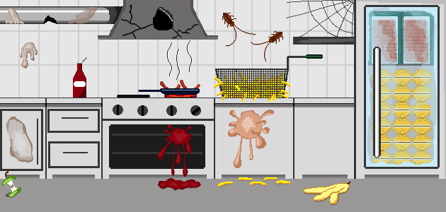
Le McStake© de Michael McSaylor’s est "virtuellement" dans toute la ville. Ici, les chefs commencent leur carrière en tant qu'employés produisant du $FFOOD que les rats adorent pour sa “simplicité”.
Événements
| Événement | Chefs | Rats |
|---|---|---|
| Entrer dans la cuisine (stake) | Pas de conditions | Pas de conditions |
| Paiement (claim) |
Succès :
|
Succès :
|
| Récompense : Minimum 250 $FFOOD par jour (au prorata à la seconde), recevez 80 % sur le claim. | Récompense : Vole une part garantie de 20% du $FFOOD produit. | |
| Risque : Aucun jusqu'à présent, mais il y en aura dans la v2. | Risque : Aucun jusqu'à présent, mais il y en aura dans la v2. | |
| Sortir de la cuisine (unstake) | Impossible de unstake dans les 24 heures | Impossible de unstake dans les 24 heures |
| Risque : Aucun jusqu'à présent, mais il y en aura dans la v2. | Risque : Aucun jusqu'à présent, mais il y en aura dans la v2. |
Cuisine CasualFood TheStakeHouse©
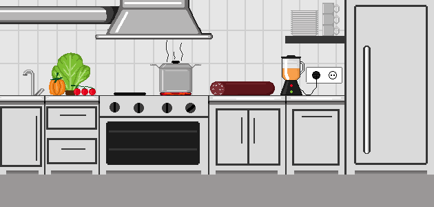
Un homme avisé a dit un jour : "Il n'y a pas de second meilleur". Il parlait bien sûr des steaks de TheStakeHouse©. Ces cuisines CasualFood permettent à vos chefs de produire du $CFOOD et c'est là que le bon grain se sépare de l'ivraie. Avec une offre totale de seulement 5 000 cuisines, il faut être rapide pour entrer dans le jeu.
Coût du mint
| 1 - 1,000 | 2,000 $FFOOD |
| 1,001 - 2,000 | 3,000 $FFOOD |
| 2,001 - 3,000 | 4,000 $FFOOD |
| 3,001 - 4,000 | 5,000 $FFOOD |
| 4,001 - 5,000 | 6,000 $FFOOD |
Événements
| Événement | Chefs | Rats |
|---|---|---|
| Entrer dans la cuisine (stake) | Condition requise : 28% de compétence | Condition requise : 28% d'intelligence |
| Paiement (claim) |
Succès :
|
Succès :
|
| Récompense : Minimum 250 $CFOOD par jour (au prorata à la seconde), recevez 80 % sur le claim. | Récompense : Vole une part garantie de 20% du $CFOOD produit. | |
| Risque : Aucun jusqu'à présent, mais il y en aura dans la v2. | Risque : Aucun jusqu'à présent, mais il y en aura dans la v2. | |
| Sortir de la cuisine (unstake) | Impossible de unstake dans les 24 heures | Impossible de unstake dans les 24 heures |
| Risque : Aucun jusqu'à présent, mais il y en aura dans la v2. | Risque : Aucun jusqu'à présent, mais il y en aura dans la v2. |
Cuisine GourmetFood LeStake©
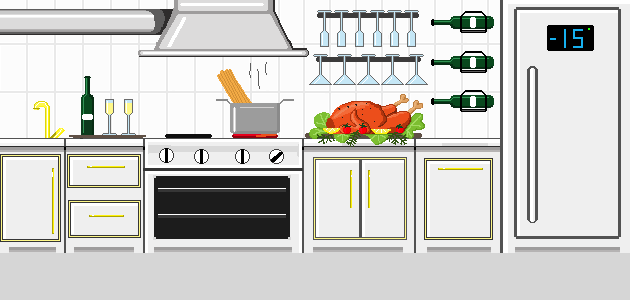
LeStake©. Aucun autre restaurant dans le métavers ne peut rivaliser avec cette célèbre cuisine 3 étoiles, et elle ne peut être achetée qu'avec du $CFOOD. Ces cuisines GourmetFood sont l'endroit où les mets raffinés $GFOOD sont fabriqués et où les héros deviennent des légendes. Avec une offre totale de 500 cuisines, seule la crème de la crème pourra s'enorgueillir d'en être les propriétaires. Mais cela ne s'arrête pas là. Comme le $GFOOD est le jeton DAO de RatAlert, tous les chefs & rats opérant dans cette cuisine auront les premières places dans tous les processus de décision du jeu.
Coût du mint
| 1 - 100 | 2,000 $CFOOD |
| 101 - 200 | 3,000 $CFOOD |
| 201 - 300 | 4,000 $CFOOD |
| 301 - 400 | 5,000 $CFOOD |
| 401 - 500 | 6,000 $CFOOD |
Événements
| Événement | Chefs | Rats |
|---|---|---|
| Entrer dans la cuisine (stake) | Condition requise : 72% de compétence | Condition requise : 72% d'intelligence |
| Paiement (claim) |
Succès :
|
Succès :
|
| Récompense : Minimum 250 $GFOOD par jour (au prorata à la seconde), recevez 80 % sur le claim. | Récompense : Vole une part garantie de 20% du $GFOOD produit. | |
| Risque : Aucun jusqu'à présent, mais il y en aura dans la v2. | Risque : Aucun jusqu'à présent, mais il y en aura dans la v2. | |
| Sortir de la cuisine (unstake) | Impossible de unstake dans les 24 heures | Impossible de unstake dans les 24 heures |
| Risque : Aucun jusqu'à présent, mais il y en aura dans la v2. | Risque : Aucun jusqu'à présent, mais il y en aura dans la v2. |
Salle de Sport
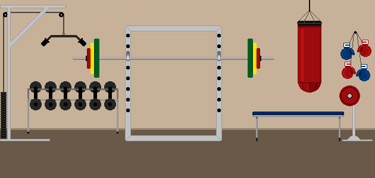
Il n'y a que peu d'emplois plus stressants que celui d'un chef. Le temps est compté, la langue est rude, les enjeux sont élevés, tout comme le risque de burn-out. Les Rats quant à eux, courent le risque d'être en surpoids et de devenir une proie facile pour les chats, notamment dans les cuisines FastFood.
Ne laissez pas cela se produire, veillez à envoyer vos personnages à la salle de sport où ils pourront se défouler, se détendre et perdre du poids.
Événements
| Événement | Chefs | Rats |
|---|---|---|
| Enter dans la salle de sport (stake) | Pas de conditions | Pas de conditions |
|
Succès : -12% de folie par jour (au prorata à la seconde) |
Succès : -8% de masse corporelle par jour (au prorata à la seconde) |
|
| Leave gym (unstake) | Impossible de unstake dans les 2h | Impossible de unstake dans les 2h |
| Pas de risques | Pas de risques |
Les Jetons
Le jeu présente 3 jetons "food" (nourriture) différents dont le nombre total décroît. Ensemble, ils sont désignés par le terme $xFOOD. Au cours de votre progression dans le jeu, vous allez produire ces jetons et en avoir besoin pour acheter des items. La liquidité sera fournie par l'équipe, mais tout le monde est encouragé à fournir de la liquidité et à gagner ses propres récompenses de LP staking.
FastFood ($FFOOD)
Le jeton ERC20 gagné pour travailler / voler staker chez McStake©. Il est proposé avec une réserve maximale de 100.000.000 jetons.
Allocations et Planning de déblocage des Jetons
| Trésorerie Play2Earn | 50% | |
| Équipe principale | 20% | 20% débloqués au lancement, puis 5% par mois |
| Incitations pour les écosystèmes | 15% | |
| Récompenses de Staking & LP | 10% | |
| Conseillers | 5% | 25% débloqués au lancement, puis 5% par mois |
CasualFood ($CFOOD)
Le jeton ERC20 gagné pour travailler / voler staker chez TheStakeHouse©. Il est proposé avec une réserve maximale de 10.000.000 jetons.
Allocations et Planning de déblocage des Jetons
| Trésorerie Play2Earn | 50% | |
| Équipe principale | 20% | 20% débloqués au lancement, puis 5% par mois |
| Incitations pour les écosystèmes | 15% | |
| Récompenses de Staking & LP | 10% | |
| Conseillers | 5% | 25% débloqués au lancement, puis 5% par mois |
GourmetFood ($GFOOD)
Le jeton ERC20 gagné pour travailler / voler staker chez LeStake©. Il est proposé avec une réserve maximale de 1.000.000 jetons and est le jeton DAO de RatAlert. Les propriétaires sont aux premières loges dans tous les
processus de décision du jeu.
Allocations et Planning de déblocage des Jetons
| Trésorerie Play2Earn | 50% | |
| Équipe principale | 20% | 20% débloqués au lancement, puis 5% par mois |
| Incitations pour les écosystèmes | 15% | |
| Récompenses de Staking & LP | 10% | |
| Conseillers | 5% | 25% débloqués au lancement, puis 5% par mois |
Les Rôles
Général
RatAlert a 3 personnages principaux : les chefs, les rats et les chats. Les chefs cuisinent mintent des jetons de nourriture (food), les rats les volent et les chats kidnappent les rats.
Chaque personnage créé est unique et peut être entraîné par le joueur. Chaque NFT possède 2 attributs qui changent lors du déblocage (unstake) ou du claim. Les attributs affectent l'apparence (image) du NFT, visible à la fois dans le jeu et sur OpenSea. dans le jeu et sur OpenSea. La taille des pixels est de 100x100, soit 3 fois la taille des autres jeux Play2Earn, comme Wolf Game.
Le coût de mint d'un NFT de génération 0 est de 0.07 WETH.
Les utilisateurs éligibles à la liste blanche peuvent mint leurs NFT jusqu'à 24 heures avant le lancement officiel, et bénéficier d'une réduction de 15 %, ce qui donne un prix de 0.06 WETH.
Une fois que 10 000 NFT de génération 0 auront été vendus, les NFT de génération 1 pourront être achetés avec le premier de nos jetons de jeu, $FFOOD (FastFood) :
| 10,001 - 20,000 | 1,000 $FFOOD |
| 20,001 - 30,000 | 1,500 $FFOOD |
| 30,001 - 40,000 | 2,000 $FFOOD |
| 40,001 - 60,000 | 3,000 $FFOOD |
Chefs
Les chefs sont les personnages principaux du jeu et sont dotés de 5 types de traits différents :
- Yeux : comprend les lunettes de soleil ou les yeux laser
- Chapeau : comprend divers chapeaux, comme le célèbre bonnet rouge du McStake©
- Cou : divers articles pour le cou, comme des attaches papillon
- Bouche : comprend diverses barbes, comme une barbe tressée
- Main : comprend différents accessoires, comme des rouleaux à pâtisserie ou des couteaux
90% de tous les mints sont des chefs.
Les chefs ont deux attributs : compétence et folie.
La Compétence est un attribut exclusivement positif et décrit la capacité de votre chef à apprendre de nouvelles choses et à acquérir de l'expérience. Le niveau de compétence affecte également la quantité de $xFOOD que votre chef peut produire par jour. Plus votre chef est intelligent, plus il cuisinera.
La Folie est une arme à double tranchant : au début, l'attribut de folie de votre chef est inoffensif étant donné qu'il vient juste de commencer à cuisiner dans la célèbre chaîne de FastFood McStake©. Il s'ennuie et a envie d'en savoir plus. Plus tard dans sa carrière, votre chef commence à cuisiner dans ses propres cuisines et se prend d'affection pour lui-même, jusqu'au point où il peut tout simplement devenir fou. Devenir fou s'accompagne d'un risque élevé de burn-out, ce qui met fin à la carrière de votre chef et le ramène à la case départ.
Cependant, la chance sourit aux audacieux. Si vous êtes suffisamment motivé pour prendre le risque de voir votre chef parié devenir fou, vous avez la possibilité de minter gratuitement l'un des 100 chats qui s'occupera des rats à sa manière.
Même si vous n'êtes pas en mesure de minter l'un des 100 chats, vous pouvez toujours en obtenir un en gardant votre chef fou (ou votre rat obèse)
Le niveau de compétence du chef est représenté par son corps tandis que son niveau de folie est représenté par sa tête. Les deux attributs sont affichés sur une une échelle de 0% à 100 %.
Liste des niveaux de folie
| Image | Description | Valeur Numérique |
|---|---|---|
 |
bored (ennuyé) | 0% |
 |
unconventional (non conventionnel) | 15% |
| 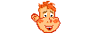 | fancy (chic) | 28% |
| brilliant (brillant) | 42% | |
| 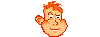 | creative genius (génie créatif) | 58% |
 |
guru (gourou) | 72% |
 |
insane (fou) | 86% |
Liste des niveaux de compétence
Tous les corps incluent la tête du "gourou" pour des raisons artistiques :
| Image | Description | Valeur Numérique | Gains en $xFOOD |
|---|---|---|---|
 |
Kitchen Scullion (Garçon de Cuisine) | 0% | 100% |
| 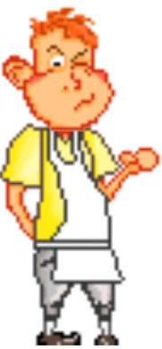 | Vegetable Slicer (Coupe-Légumes) | 15% | 125% |
 |
Ingredient Taster (Goûteur d'Ingrédients) | 28% | 150% |
 |
Pastry chef (Chef Pâtissier) | 42% | 175% |
 |
Chef de Partie | 58% | 200% |
 |
Sous Chef | 72% | 225% |
 |
Three star chef (Chef trois étoiles) | 86% | 250% |
Événements de Chef
Événement inspection alimentaire
Puisque vos chefs cuisiniers "collaborent" avec les rats, ils peuvent recevoir la visite de l'inspection alimentaire. Elle interdira à votre chef de cuisiner pendant 24 heures, ce qui entraînera une réduction de ses compétences et de sa folie.
Plus votre chef est compétent, moins il a de chances d'avoir affaire à l'inspection alimentaire.
Les événements se produisent lorsque vous réclamez (claim) ou retirez (unstake) vos chefs.
| Niveau de compétence minimum requis | >15% (vegetable slicer / coupe-légumes) |
| Probabilité d'occurrence | 2-12% à chaque unstake ou claim, selon le niveau de compétence |
| Formule d'occurrence : | ((skill-100)/-1000)+0.02 |
| Résultat 1 | skill (compétence) réduite de 10% |
| Résultat 2 | insanity (folie) réduite de 25% |
| Niveau de compétence | Risque d'être contrôlé par l'inspecteur des aliments |
|---|---|
| 0% | 12% |
| 10% | 11% |
| 20% | 10% |
| 30% | 9% |
| 40% | 8% |
| 50% | 7% |
| 60% | 6% |
| 70% | 5% |
| 80% | 4% |
| 90% | 3% |
| 100% | 2% |
Événement de Burn-out
Le surmenage entraîne généralement l'épuisement, la fatigue et des problèmes de santé. Les chefs qui sont fous ont un risque très élevé de souffrir d'épuisement professionnel. Les chefs ayant un niveau de compétence plus élevé ont beaucoup plus de chances d'éviter le burn-out.
Laisser votre chef travailler trop longtemps alors qu'il est fou comporte le risque qu'il quitte son lieu de travail et redémarre avec 0 point de compétence ainsi que 0 point de folie.
Ne laissez pas cela se produire, veillez à envoyer vos Chefs à la Salle de Sport pour qu'ils puissent se défouler et se détendre.
Les événements se produisent lorsque vous réclamez (claim) ou retirez (unstake) vos chefs.
| Niveau de compétence minimum requis | >86% (insane / fou) |
| Probabilité d'occurrence | 27-2% à chaque unstake ou claim, selon le niveau de compétence |
| Formule d'occurrence : | ((skill-100)/-400)+0.02 |
| Résultat 1 | skill (compétence) réduite à 0% |
| Résultat 2 | insanity (folie) réduite à 0% |
| Niveau de compétence | Risque de souffrir de burn-out |
|---|---|
| 0% | 27.00% |
| 10% | 24.50% |
| 20% | 22.00% |
| 30% | 19.50% |
| 40% | 17.00% |
| 50% | 14.50% |
| 60% | 12.00% |
| 70% | 9.50% |
| 80% | 7.00% |
| 90% | 4.50% |
| 100% | 2.00% |
Rats
Les rats sont les vilains du jeu et peuvent avoir 5 types de traits différents :
- Queue : comprend les décorations de queue ou les queues blessées
- Yeux : comprend diverses lunettes de soleil ou des yeux laser
- Piercings : comprend divers piercings de la tête, comme les piercings du nez et des oreilles
- Chapeaux : comprend divers couvre-chefs, comme les bonnets de nuit ou les bonnets d'hiver
- Cou : comprend différents accessoires pour le cou, comme des cravates ou des écharpes
10% de tous les mints sont des rats.
Les rats mangent et volent 20% des $xFOOD des Chefs pour leur meute de rats.
Les rats ont deux attributs, l'intelligence et la masse corporelle.
L'Intelligence est un attribut exclusivement positif, et décrit la capacité de vos rats à éviter les pièges à rats du chef avec plus de confiance.
Semblable à la folie du chef, la masse corporelle peut s'agir d'un bon ou d'un mauvais attribut : Les rats commencent comme anorexiques et doivent gagner en masse corporelle afin de manger et voler plus de $xFOOD pour leur meute. Après un certain temps, ils deviendront athletiques, ce qui est la condition la plus parfaite pour un rat. Les rats athlétiques peuvent voler l'optimum des $xFOOD par jour des Chefs. Les rats qui sont plus minces ou plus lourds qu'athletiques ne sont pas aussi efficaces quand il s'agit de voler les chefs.
Les rats qui grossissent présentent plusieurs inconvénients : ils sont plus léthargiques et plus faibles que leurs congénères plus minces, ce qui leur permet de transporter moins de nourriture lorsqu'ils sont stakés dans une cuisine. Les rats obese ont un net désavantage. Ils sont une cible facile pour le chat du Chef. Les chats aiment beaucoup les rats obèses et n'hésitent pas à les kidnapper lorsqu'ils les repèrent. Un rat kidnappé redémarre avec 0 point d'intelligence et 0 point de masse corporelle.
Tant que vous avez au moins un rat obèse staké et que vous possédez au moins un chef, vous pourrez recevoir de manière aléatoire l'un des chats mintés, vous permettant de l'utiliser à votre avantage.
Le niveau d'intelligence du rat est représenté par la tête, tandis que le niveau de masse corporelle est représenté par le corps.
Les deux attributs sont affichés sur une échelle de 0 à 100%.
Liste des niveaux d'intelligence
| Image | Description | Valeur Numérique |
|---|---|---|
 |
braindead (sans cerveau) | 0% |
 |
stupid (stupide) | 15% |
 |
foolish (sot) | 28% |
| 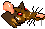 | average (moyen) | 42% |
 |
bright (lumineux) | 58% |
 |
smart (intelligent) | 72% |
 |
genius (génie) | 86% |
Liste des taux de graisse corporelle
Tous les corps incluent la tête "intelligente" pour des raisons artistiques :
| Image | Description | Valeur Numérique | Gains en $xFOOD |
|---|---|---|---|
| 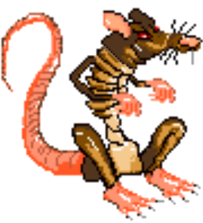 | anorexic (anorexique) | 0% | 55% |
| 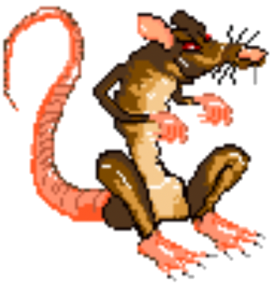 | skinny (maigre) | 15% | 70% |
| 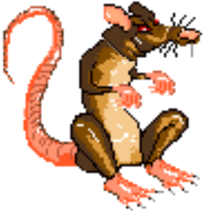 | lean (mince) | 28% | 85% |
 |
athletic (athlétique) | 42% | 100% |
| 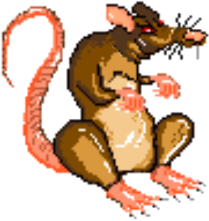 | chubby (joufflu) | 58% | 90% |
 |
fat (gras) | 72% | 80% |
 |
obese (obèse) | 86% | 70% |
Événements Rat
Événement Piège à Rats
Tous les chefs n'apprécient pas le fait qu'il y ait eu un accord pour donner 20% de toutes leur production de $xFOOD, alors certains d'entre eux ont installé des pièges à rats. Se retrouver coincé dans un piège est très stressant pour les rats, ils perdent donc des points de masse corporelle et d'intelligence en étant piégés. Les rats plus intelligents sont capables d'éviter les pièges à rats plus souvent.
Les événements se produisent lorsque vous réclamez (claim) ou retirez (unstake) vos rats.
| Niveau d'intelligence minimum requis | >15% (skinny / maigre) |
| Probabilité d'occurrence | 2-12% à chaque unstake ou claim, selon le niveau d'intelligence |
| Formule d'occurrence : | ((intelligence-100)/-1000)+0.02 |
| Résultat 1 | body mass (masse corporelle) réduite de 50% |
| Résultat 2 | intelligence réduite de 10% |
| Niveau d'intelligence | Risque d'être pris dans un piège à rat |
|---|---|
| 0% | 12% |
| 10% | 11% |
| 20% | 10% |
| 30% | 9% |
| 40% | 8% |
| 50% | 7% |
| 60% | 6% |
| 70% | 5% |
| 80% | 4% |
| 90% | 3% |
| 100% | 2% |
Événement se faire attraper par un chat
Les rats en surpoids et obèses sont très léthargiques et faibles. Ils se déplacent très lentement et il leur est difficile d'éviter leurs ennemis naturels - les chats. Les chats adorent les rats obèses parce qu'ils sont une proie facile. Les rats plus intelligents ont moins de chances d'être repérés par les chats.
Un rat obèse attrapé par un chat souffre d'une perte totale d'intelligence et de masse corporelle.
Ne laissez pas cela se produire, assurez-vous d'envoyer vos rats à la Salle de Sport où ils peuvent perdre de la graisse !
Les événements se produisent lorsque vous réclamez (claim) ou retirez (unstake) vos rats.
| Niveau minimum de masse corporelle requis | >86% (obèse) |
| Probabilité d'occurrence | 27-2% à chaque unstake ou claim, selon le niveau de compétence |
| Formule d'occurrence : | ((intelligence-100)/-400)+0.02 |
| Résultat 1 | intelligence réduite à 0% |
| Résultat 2 | body mass (masse corporelle) réduite à 0% |
| Niveaux d'intelligence | Risque d'être attrapé par un chat |
|---|---|
| 0% | 27.00% |
| 10% | 24.50% |
| 20% | 22.00% |
| 30% | 19.50% |
| 40% | 17.00% |
| 50% | 14.50% |
| 60% | 12.00% |
| 70% | 9.50% |
| 80% | 7.00% |
| 90% | 4.50% |
| 100% | 2.00% |
Chats
Le troisième personnage jouable est le chat. Il n'y a que 100 chats dans le jeu et ils ne peuvent être mintés gratuitement que par des chefs fous. Un chat vous permet de voler le butin de 5 rats obèses aléatoires par jour. Après 10 jours, le chat cherchera un nouveau foyer soit chez un autre chef fou aléatoire, soit chez un propriétaire de rats obèses possédant au moins un chef (le niveau de folie du chef "supplémentaire" n'a pas d'importance dans ce cas).
Le chat est conçu pour être la récompense du risque lorsque l'on joue audacieusement en stakant :
- Des chefs fous qui peuvent aléatoirement souffrir de burn-outs
- Des rats obèses qui peut être tué au hasard par un chat
Il n'y a pas d'événements, d'attributs ou de traits pour les chats.
Adresses des contrats
| Chefs / Rats | Prochainement… |
| Cuisine FastFood | Prochainement… |
| Cuisine CasualFood | Prochainement… |
| Cuisine GourmetFood | Prochainement… |
| Salle de Sport | Prochainement… |
| $FFOOD | Prochainement… |
| $CFOOD | Prochainement… |
| $GFOOD | Prochainement… |